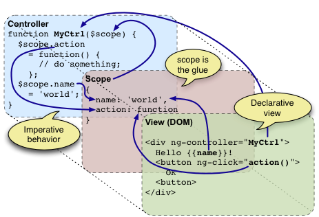

在AngularJS中，除了内置指令如ng-click等，我们还可以自定义指令。自定义指令，是为了扩展DOM元素的功能。代码中，通过指定directive中的restrict属性，来决定这个指令是作为标签（E）、属性（A）、属性值（C）、还是注释（M）。指令的定义过程就不详述了，今天小课堂主要是讲关于scope属性取值的区别。
$scope 的使用贯穿整个 AngularJS App 应用,它与数据模型相关联,同时也是表达式执行的上下文.有了 $scope 就在视图和控制器之间建立了一个通道,基于作用域视图在修改数据时会立刻更新 $scope,同样的 $scope 发生改变时也会立刻重新渲染视图.有了 $scope 这样一个桥梁,应用的业务代码可以都在 controller 中,而数据都存放在controller 的 $scope 中.
$scope 对象在 AngularJS 中充当数据模型的作用,也就是一般 MVC 框架中 Model 得角色.但又不完全与通常意义上的数据模型一样,因为 $scope 并不处理和操作数据,它只是建立了视图和 HTML 之间的桥梁,让视图和 Controller 之间可以友好的通讯.
①、false（默认值）：直接使用父scope。
②、true：继承父scope
③、对象{ }：创建一个新的“隔离”scope，但仍可与父scope通信。隔离的scope，通常用于创建可复用的指令，也就是它不用管父scope中的model。然而虽然说是“隔离”，但通常我们还是需要让这个子scope跟父scope中的变量进行绑定。绑定的策略有3种：@、=、&。
每当一个指令被创建的时候，都会有这样一个选择，是继承自己的父作用域（一般是外部的Controller提供的作用域或者根作用域（$rootScope）），还是创建一个新的自己的作用域，当然AngularJS为我们指令的scope参数提供了三种选择，分别是：false,true,{}；默认情况下是false。
首先我们来看一下，当scope参数被设置为false时有什么情况发生在这种情况下，在指令模板中可以直接使用父作用域中的变量，函数。首先我们来创建一个指令，代码如下所示：demo1
angular.module("MyApp", [])
.controller("MyController", function ($scope) {
//J1 这里我们在作用域里初始化两个变量
$scope.name = "dreamapple";
$scope.age = 20;
//J2 创建一个方法，修改我们创建的对象的年龄
$scope.changeAge = function () {
$scope.age = 22;
}
})
//J3 创建我们的指令，指令名字为"myDirective"
.directive("myDirective", function () {
var obj = {
//J4 指令的声明模式为 "AE" 属性和元素
restrict: "AE",
//J5 指令继承父作用域的属性和方法
scope: false,
replace: true,
template: "" +
"下面部分是我们创建的指令生成的
" +
"我的名字是：
" +
"我的年龄是：" +
""+
" "
}
return obj;
});
因为我们将scope的属性设置为false所以，我们创建的指令继承了父作用域的一切属性和方法，这也使得在指令的模板中我们可以使用这些属性和方法。
注意：此时我们在输入框里改变名字，会发现上面的两个名字都发生了变化，你肯定会说，这肯定是这样啊，数据绑定嘛，好，我们接着往下走。
当把scope属性设置为true时，这表明我们创建的指令要创建一个新的作用域，这个作用域继承自我们的父作用域。等等，刚才我们不是说了，当把scope属性值设置为false时，不也是继承我们的父作用域吗？表急，我们接着往下看。
修改上面的JS代码，将指令中的：scope:false修改为scope:true demo2
然后我们再试着在我们的input输入框中写一些字符串，会发现，指令中的那个name发生了变化，但是指令外的那个name却没有发生变化，这说明了一个问题。
当我们将scope设置为true的时候，我们就新创建了一个作用域，只不过这个作用域是继承了我们的父作用域；我觉得可以这样理解，我们新创建的作用域是一个新的作用域，只不过在初始化的时候，用了父作用域的属性和方法去填充我们这个新的作用域。它和父作用域不是同一个作用域。
当我们将scope设置为false的时候,我们创建的指令和父作用域（其实是同一个作用域）共享同一个model模型，所以在指令中修改模型数据，它会反映到父作用域的模型中。
当我们将scope的属性设置为{}时，我们可以做更多的事情。
AngularJS最强的大的地方之一就是它可以构建组件，无论放在哪里都是可以使用的；这所以可以做到这些，不得不归功于指令的这个属性；当我们将scope设置为{}时，意味着我们创建的一个新的与父作用域隔离的新的作用域，这使我们在不知道外部环境的情况下，就可以正常工作，不依赖外部环境。
当然首先我们还是要给出我们的例子，先看代码,我们修改了上述的JS代码和HTML代码 JS代码：demo3
angular.module("MyApp", [])
.controller("MyController", function ($scope) {
$scope.name = "Bill";
$scope.age = 20;
$scope.changeAge = function(){
$scope.age = 0;
}
})
.directive("myDirective", function () {
var obj = {
restrict: "AE",
scope: {
name: '@myName',
age: '=',
changeAge: '&changeMyAge'
},
replace: true,
template: "" +
"下面部分是我们创建的指令生成的
" +
"我的名字是：
" +
"我的年龄是：
" +
"在这里修改名字：
" +
"" +
" "
}
return obj;
});
我们使用了隔离的作用域，不代表我们不可以使用父作用域的属性和方法。
我们可以通过向scope的{}中传入特殊的前缀标识符（即prefix），来进行数据的绑定。
在创建了隔离的作用域，我们可以通过@,&,=引用应用指令的元素的属性，如上面的代码那样，我们可以在
这个元素中，利用前缀标识符通过使用属性my-name,age,change-my-age来引用这些属性的值。下面我们来看看如何使用这些前缀标识符：
1.@：单向绑定，外部scope能够影响内部scope，但反过来不成立；
这是一个单项绑定的前缀标识符。使用方法：在元素中使用属性，好比这样
注意，属性的名字要用-将两个单词连接，因为是数据的单项绑定所以要通过使用{{}}来绑定数据。
2、=：双向绑定，外部scope和内部scope的model能够相互改变；
这是一个双向数据绑定前缀标识符。使用方法：在元素中使用属性，好比这样
注意，数据的双向绑定要通过=前缀标识符实现，所以不可以使用{{}}。
3、&：把内部scope的函数的返回值和外部scope的任何属性绑定起来。
这是一个绑定函数方法的前缀标识符。使用方法：在元素中使用属性，好比这样
注意，属性的名字要用-将多个个单词连接。
scope: {
// `myName` 就是原来元素中的`my-name`属性
name: '@myName',
age: '=',
// `changeMyAge`就是原来元素中的`change-my-age`属性
changeAge: '&changeMyAge'
}
我们的指令是如何利用这些前缀标识符来寻找我们想要的属性或者函数的？
@ 当指令编译到模板的name时，就会到scope中寻找是否含有name的键值对，如果存在，就像上面那样，看到@就知道这是一个单向的数据绑定，然后寻找原来的那个使用指令的元素上（或者是指令元素本身）含有这个值的属性即my-name={{name}}，然后在父作用域查找{{name}}的值，得到之后传递给模板中的name。
=和&与@差不多，只不过=进行的是双向的数据绑定，不论模板还是父作用域上的属性的值发生改变都会使另一个值发生改变，而&是绑定函数而已。